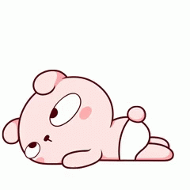

⚙
DELAY TIMER
−
10s
+
SCROLL WHEEL ALSO ADJUSTS
TOOT FIRES WHEN TIME IS UP
ARM TIMER
CLOSE
ARMED
10
TAP or PTT TO CANCEL
FART MACHINE
🐰

▲▼
RANDOM
TAP or
PTT
TO TOOT · SCROLL TO PICK
LONG-PRESS PTT TO QUIT